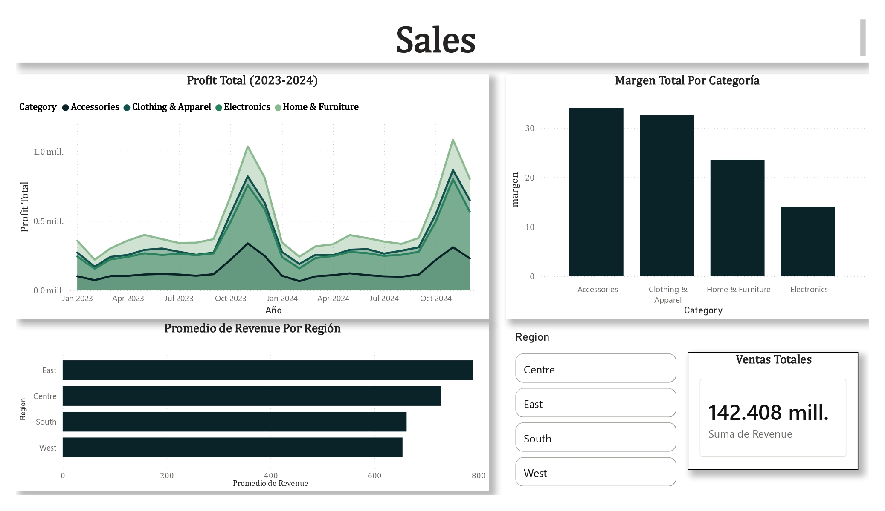

📊 Sales Performance & Profitability Analysis (2023 vs. 2024)
Resumen Ejecutivo: El análisis de 200,000 transacciones revela que las métricas de negocio cambian radicalmente según el enfoque: mientras que Centre + Home & Furniture domina en dinero absoluto ingresado, East + Accessories lidera en eficiencia de margen (alcanzando un 34.07%), demostrando que un mayor precio o volumen no siempre equivale a la mayor rentabilidad porcentual
El proyecto entero est disponible en Proyecto Análisis de ventas
Resumen del Dataset
Este archivo CSV contiene un conjunto de datos sintético de 200,000 transacciones de venta de productos, cada una con atributos clave para su análisis y visualización. Los datos abarcan el identificador de orden, fecha de transacción, detalles del cliente (nombre, ciudad, estado, región), información del producto (categoría, subcategoría, nombre del producto), cantidad vendida, precio unitario, ingresos y ganancias (profit). Generados de manera aleatoria pero estadísticamente realista, estos registros permiten explorar el rendimiento de ventas, el comportamiento del cliente, la rentabilidad del producto y las tendencias del mercado regional.
Características y Notas de Calidad de los Datos
- Volumen: 200,000 transacciones minoristas sintéticas (2023–2024).
- Integridad de los datos:
- No se encontraron valores nulos (missing values) ni registros duplicados.
- La columna Country (United States) fue eliminada debido a su redundancia.
- Se detectó y corrigió una tasa de inconsistencia del 5.15% en la columna Revenue (Revenue $\neq$ Quantity $\times$ Unit_Price), logrando un 100% de consistencia mediante el recálculo con los valores de cantidad y precio unitario.
Esquema de Datos
| Característica | Tipo | Descripción |
|---|---|---|
| Order_ID | Int | Identificador único de la transacción |
| Order_Date | Date | Fecha de la transacción |
| Customer_Name | Varchar(27) | Nombre completo del cliente |
| City / State / Region | Varchar | Datos geográficos del cliente |
| Category / Sub_Category | Varchar | Clasificación del producto |
| Product_Name | Text | Descripción del producto |
| Quantity | Int | Unidades compradas ([1, 10]) |
| Unit_Price | Numeric(12,2) | Precio por unidad en USD |
| Revenue | Numeric(12,2) | Monto total de ventas |
| Profit | Numeric(12,2) | Ganancia neta obtenida |
Nota de diseño: La tabla se mantiene intencionalmente desnormalizada para optimizar las consultas analíticas sin necesidad de operaciones JOIN innecesarias.
🎯 Objetivos del Análisis
- Identificar qué categoría genera la mayor ganancia (
profit) y cómo evoluciona año con año. - Evaluar el comportamiento del ticket promedio por región.
- Analizar la relación entre un ticket de venta alto y la ganancia real.
- Descubrir qué categorías ofrecen el mayor margen porcentual de ganancia real sobre los ingresos.
🔍 Hallazgos Clave (Key Insights)
A continuación se presentan los descubrimientos más importantes obtenidos tras el análisis exploratorio y cuantitativo del conjunto de datos de 200,000 transacciones de venta (2023-2024).
1. Volumen de Ventas vs. Ingresos Totales (Revenue)
- Desalineación entre volumen e ingresos: La categoría Clothing & Apparel lideró consistentemente en el número total de transacciones (volumen) en ambos años, pero Accessories fue la categoría que generó el mayor volumen de ingresos totales (revenue). Esto demuestra que un mayor número de ventas no garantiza por sí solo una mayor facturación. Se sugiere mantener en cuidado la distribución de los productos de la categoría Clothing & Apparel para mantener el inventario abastecido, así como también implementar ofertas u otra estrategia con la finalidad de aumentar las ventas de la categoría Accessories pues es el que mantiene el menor número de ventas registradas.
2. El Mito de los Productos Costosos (Electronics vs. Home & Furniture)
- Ganador inesperado en ganancias: La hipótesis inicial apuntaba a que Electronics lideraría el profit debido a sus altos precios unitarios. Sin embargo, Home & Furniture se posicionó como la categoría con el profit total y promedio más alto en 2023 y 2024.
- Conclusión: Un precio unitario elevado no asegura necesariamente una mayor retención de ganancias netas globales.
3. Dinámica Geográfica y Ticket Promedio
- Liderazgo del Este: La región del Este registró el ticket promedio por transacción más alto del país, mientras que la región Oeste obtuvo el más bajo.
- Aclaración clave: Aunque el Este concentra un gran valor por transacción, esto debe evaluarse en conjunto con los costos y el volumen de ventas para medir su impacto real en la rentabilidad.
4. Crecimiento Año contra Año (YoY)
- Estabilidad general con una excepción: Al tratarse de un dataset sintético, la mayoría de las categorías mostraron un comportamiento estable con crecimiento porcentual positivo en ingresos de 2023 a 2024.
- La excepción: La categoría Accessories experimentó una ligera contracción o decrecimiento del -3.80% en sus ingresos interanuales, a pesar de seguir siendo fuerte en ingresos globales.
- Es importante el analizar la causa de esta baja (posibles causas externas o internas), con la posibilidad de recabar más datos o implementar nuevas estrategias de marketing.
5. Profit Absoluto vs. Eficiencia de Margen
- Dos formas de medir el éxito:
- Al analizar el margen porcentual ($\text{Profit} / \text{Revenue}$), Accessories demostró ser la categoría más eficiente, ofreciendo el mayor margen de ganancia porcentual en todas las regiones (alcanzando hasta un 34.07% en el Este durante 2024).
- Por el contrario, en términos de dinero absoluto aportado al negocio, el liderazgo recae en otras áreas, por ejemplo Home & Furniture y Electronics.
6. Las Mejores Combinaciones (Región + Categoría)
Dependiendo del enfoque estratégico de la empresa, los datos revelan dos perfiles ganadores distintos:
- Líder en Dinero Absoluto (Liquidez y Volumen): Centre + Home & Furniture (la combinación que aporta la mayor cantidad de ganancia neta en dinero a la compañía).
- Líder en Eficiencia (Margen Porcentual): East + Accessories (la combinación con mejor rendimiento porcentual por cada dólar vendido, amortiguando la caída general de la categoría).
- La estrategia deberá elegirse dependiendo de los objetivos de la empresa, si se está en busca de un mayor ingreso en capital detectar las acciones implementadas en la región Center en la categoría de Home & Furniture y analizar cuáles pueden ser replicadas en las otras regiones, por el contrario no descuidar la categoría de Accessories pues es la más rentable.
Estos hallazgos configuran la base analítica esencial para la construcción de los tableros de control interactivos en Power BI.

Dashboard de lo obtenido en SQL
📌 Limitaciones
- Dado que es un dataset sintetico la variabilidad de precios y años, pueden no reflejar un escenario real.
- El atributo de Customer_Name no es un identificador único por lo tanto si se espera escalar a un base de datos, se debe buscar normalizar para mantener la consistencia de los datos.
💻 Consultas SQL Destacadas
El análisis se estructuró utilizando técnicas avanzadas de SQL en PostgreSQL (funciones de ventana como LAG y DENSE_RANK, agregaciones y subconsultas):
- Análisis de Profit y Crecimiento Anual: Agrupación por categoría y uso de
LAG()para calcular la variación porcentual entre 2023 y 2024. - Ticket Promedio por Región: Uso de
AVG(revenue)agrupado por zona geográfica. - Ranking de Márgenes por Región y Categoría: Implementación de
DENSE_RANK() OVER (PARTITION BY anio ORDER BY margen_porcentual DESC)para obtener las combinaciones más eficientes del negocio.
El proyecto entero est disponible en Proyecto Análisis de ventas
🛠️ Tecnologías Utilizadas
- SQL (PostgreSQL): Funciones de agregación (
SUM,AVG), funciones de ventana (LAG,DENSE_RANK), y operaciones matemáticas con redondeo (ROUND).